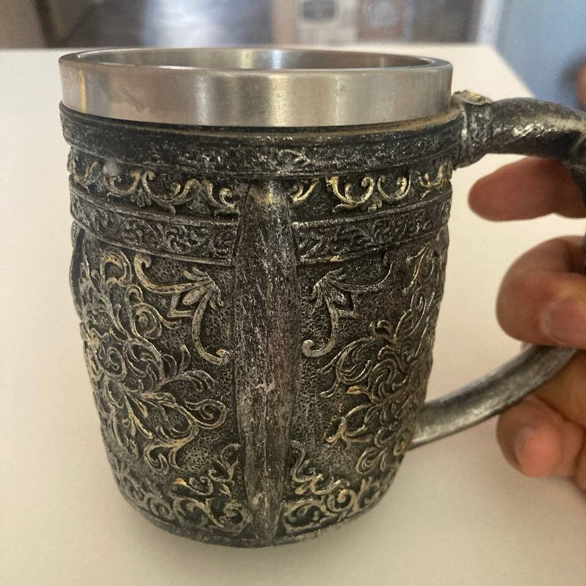
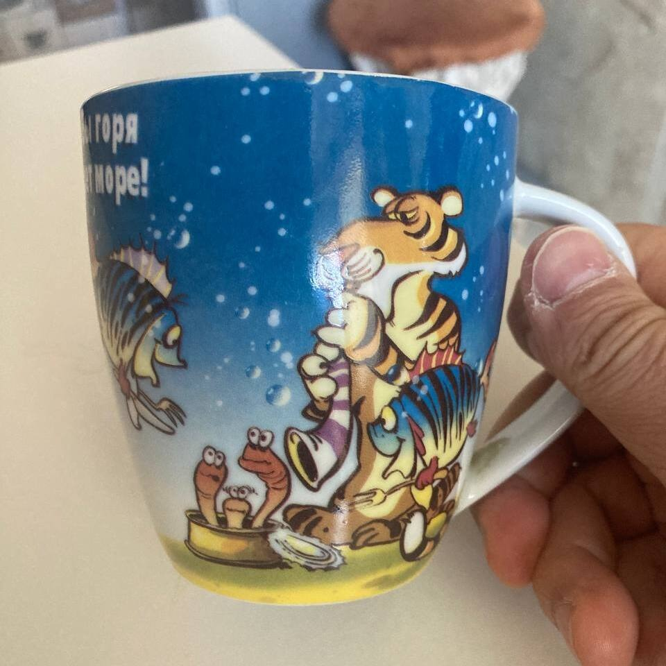
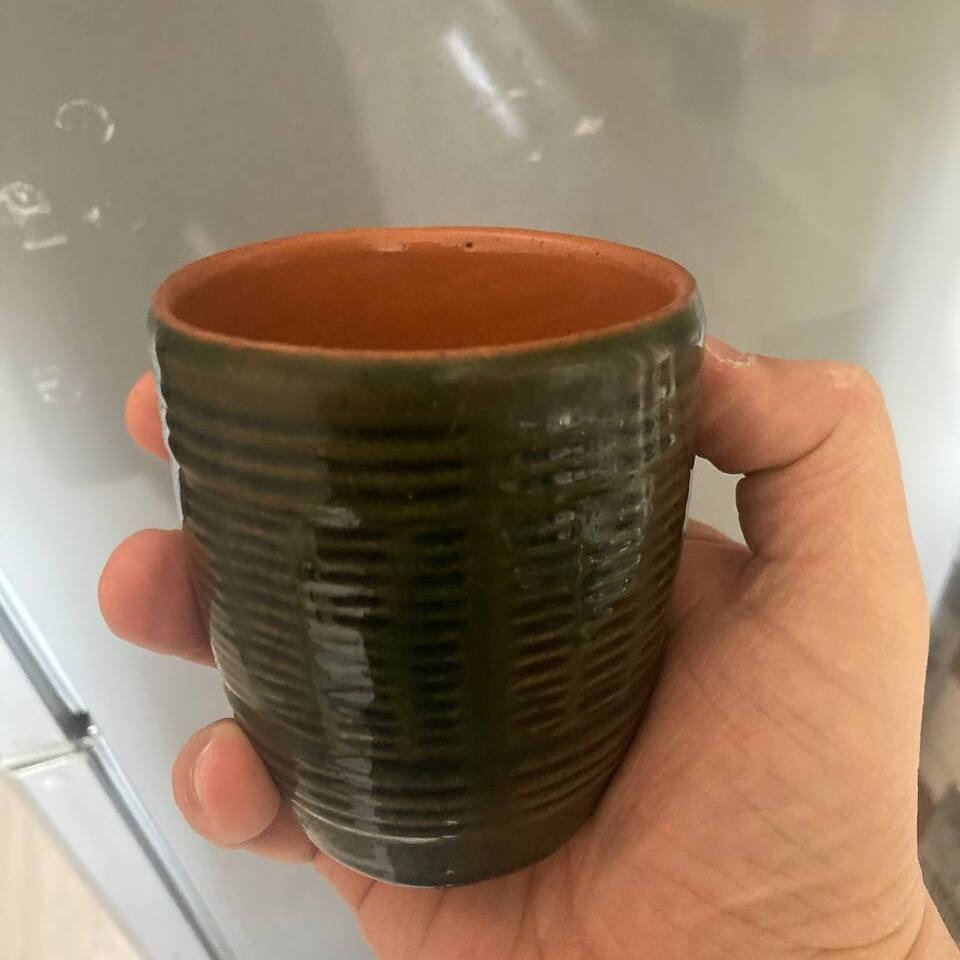
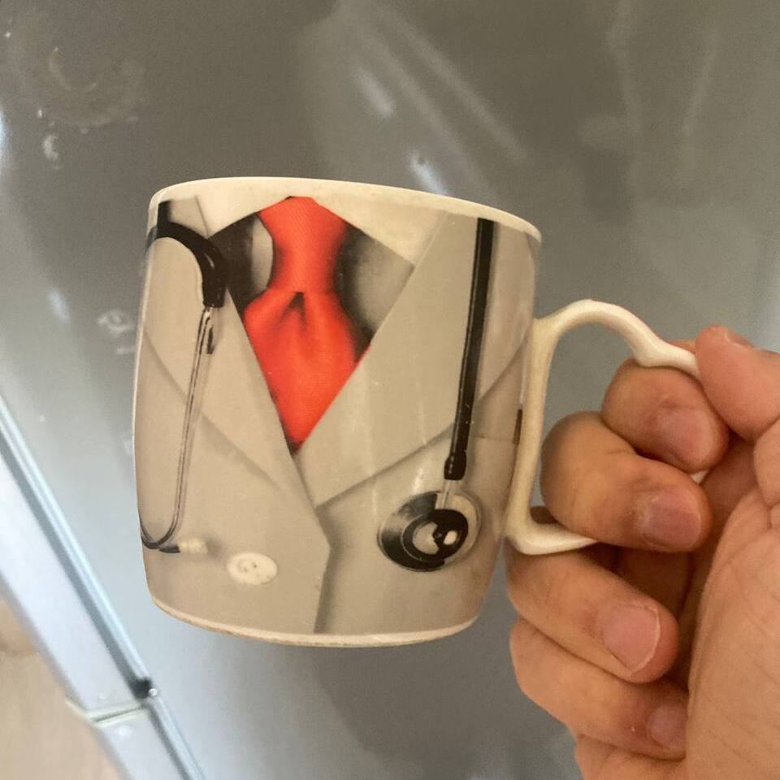
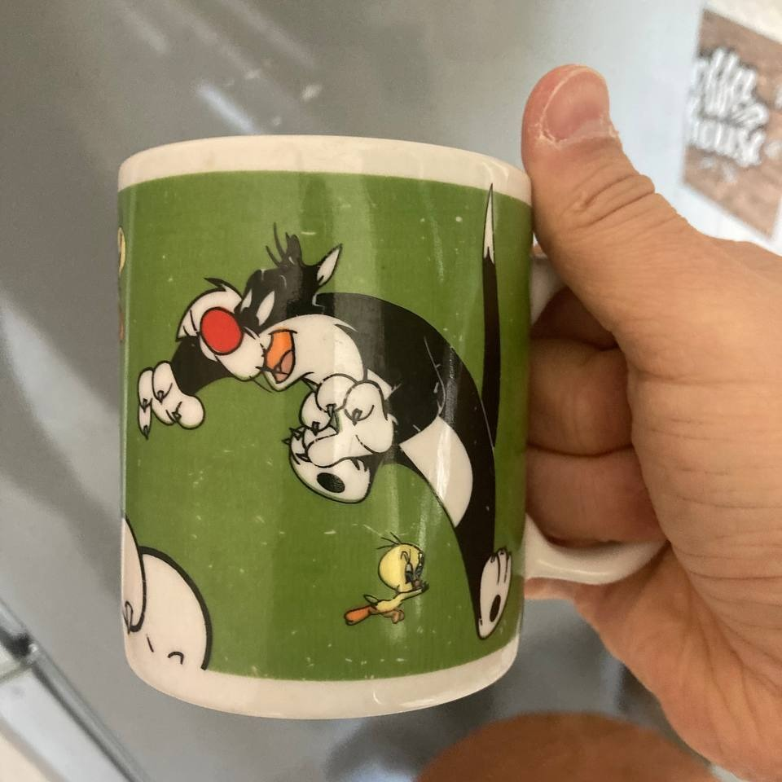
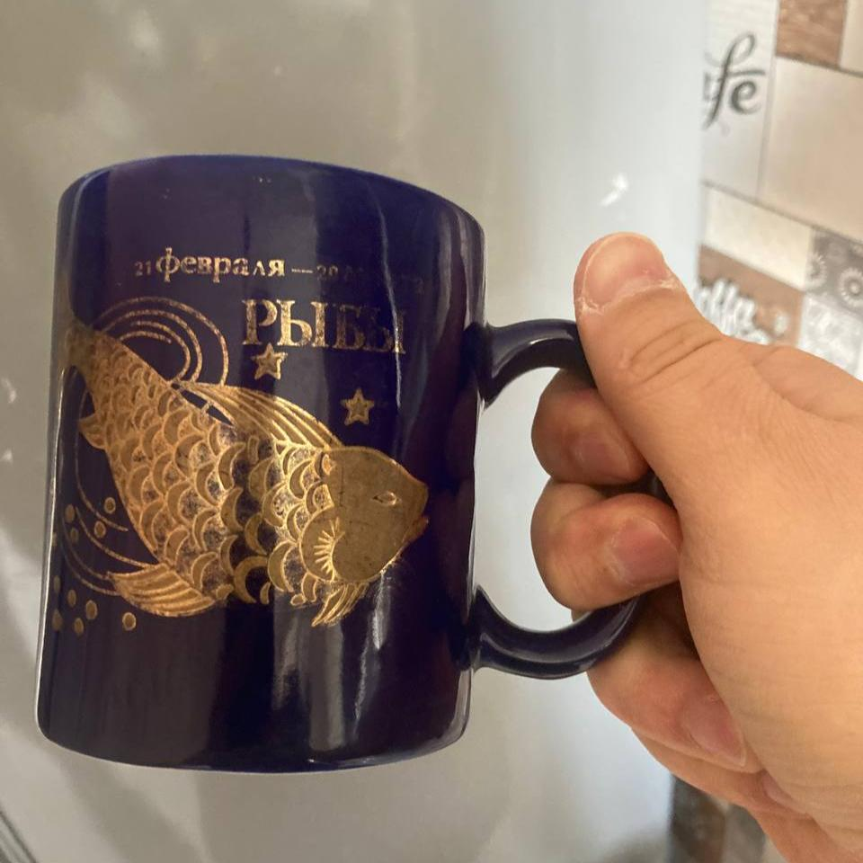
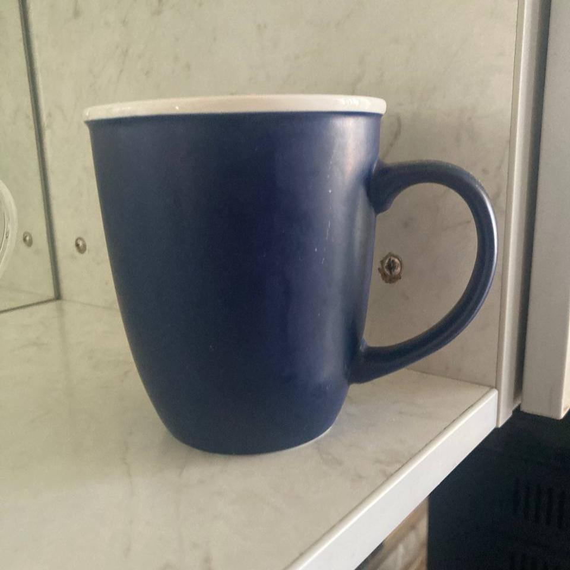
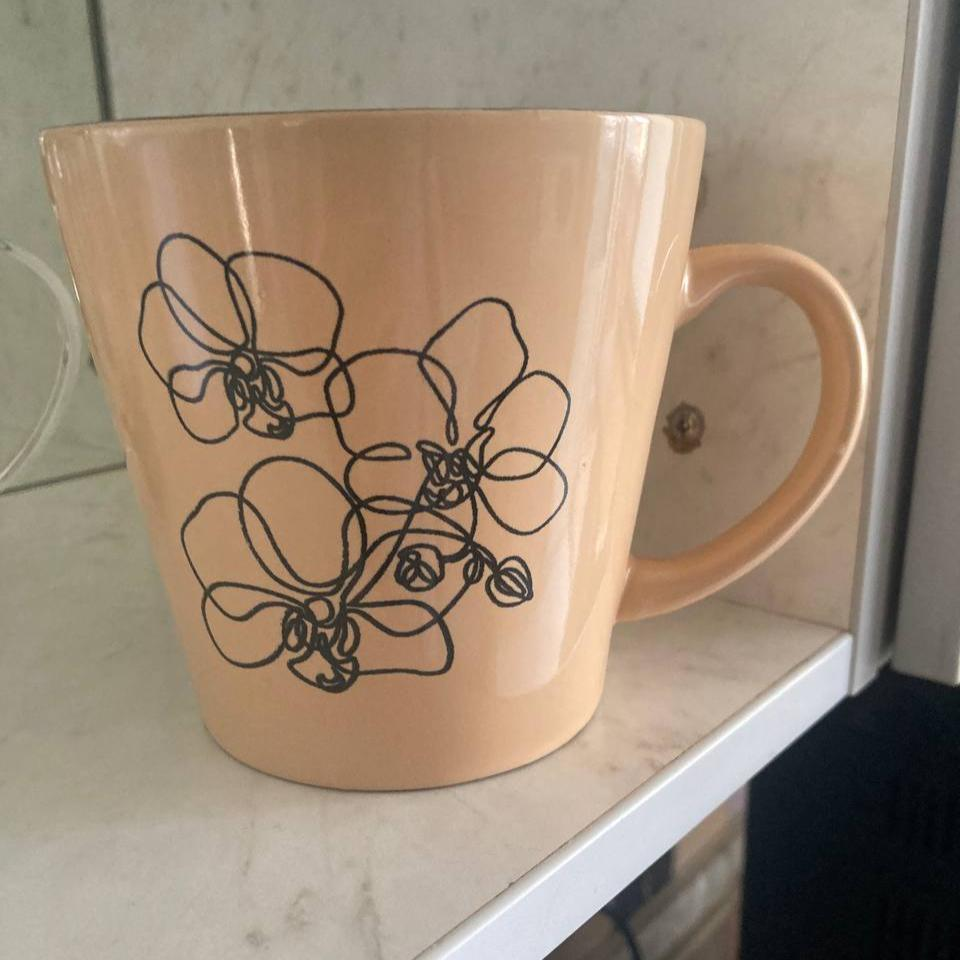
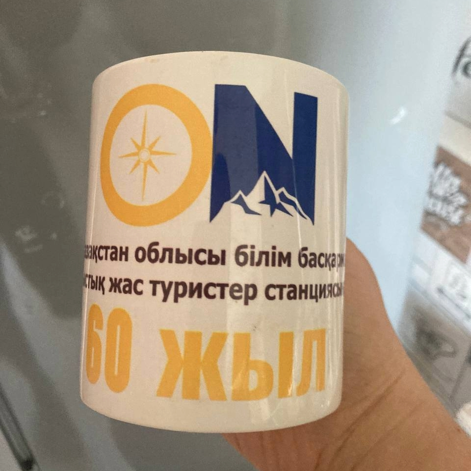

Every cup in this collection has found its way into daily life through a different path — a gift, a market find, a souvenir, or simply the last one standing after everything else broke. What they share is a place in the everyday ritual of a hot drink: the morning coffee, the afternoon tea, the late-night herbal brew. Looking at them together as a collection rather than grabbing them one at a time from the cupboard, you start to notice things: the range of shapes, the variety of glazes and colors, the way some feel solid and serious in the hand while others are light and almost playful.
Cups are among the most personal objects in any home. Unlike furniture or appliances, a cup is held — literally cradled — many times a day, close to the face, part of a private ritual. The eight cups photographed here are nothing special by any objective measure, but they are familiar in the deepest sense of the word. Each one has a place, a feeling, a kind of quiet personality. Together they form an accidental portrait of a life lived in small, warm, repeated moments.








